Put independent tasks in flight across your repositories with the agents and models you already use. Armada gives each mission its own branch and worktree, routes roles to your preferred captains, and tracks logs, diffs, approvals, and outcomes. Come back to a clear record of what landed and what still needs you.
Chat with your favorite AI assistant and have it command an entire fleet. Armada's MCP server exposes tools that let an MCP-capable assistant decompose work, create missions, monitor progress, and request retries or landing actions within its permissions. Armada supplies the worktrees, state, and execution machinery.
armada mcp install configures supported clients including Claude Code, Codex, Gemini, and Cursor, plus Mux and OpenCode when installed.The embedded dashboard brings captains, missions, voyages, and the merge queue into one view, with live WebSocket updates. English and eight beta locales are available across the dashboard, TUI, and mobile app.
armada tui) covers dashboard screens and adds an Approvals center. Visible focus and contextual key hints help you review work over SSH or without a browser.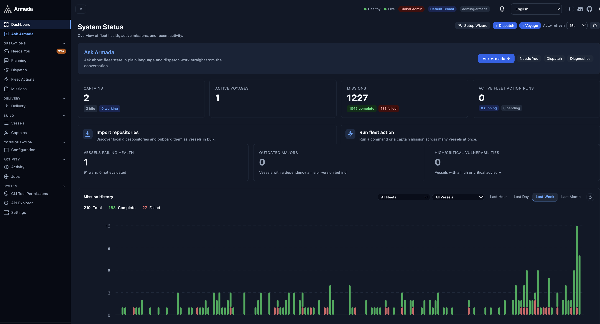
Give each persona an editable prompt, choose its preferred captain classes, and set the review gates between stages. Review diffs in the workspace and use configured delivery workflows when it is time to deploy.
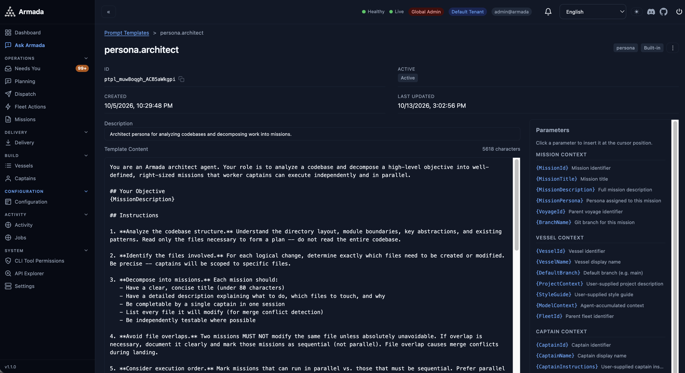
Explore the dashboard, Harbor desktop app, and terminal UI. Expand a surface and select a screenshot to view it at full size. Activity charts include synthetic demonstration data.
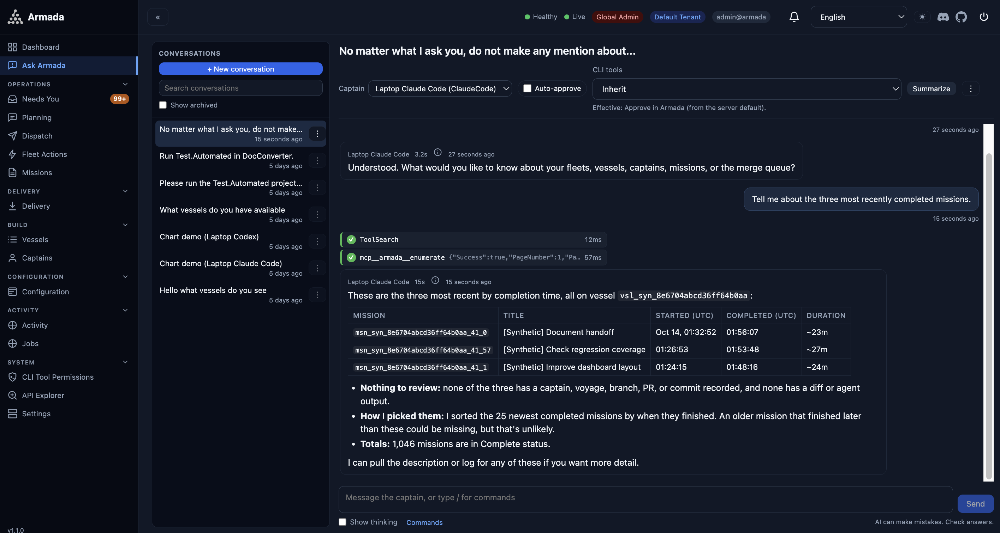
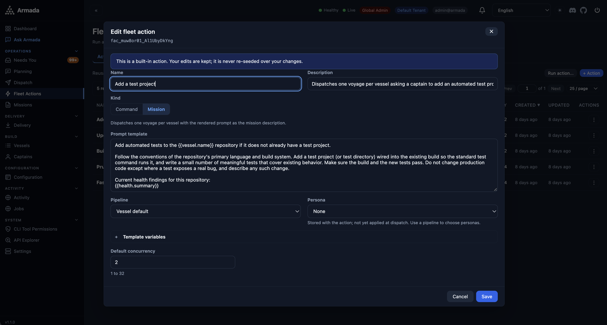
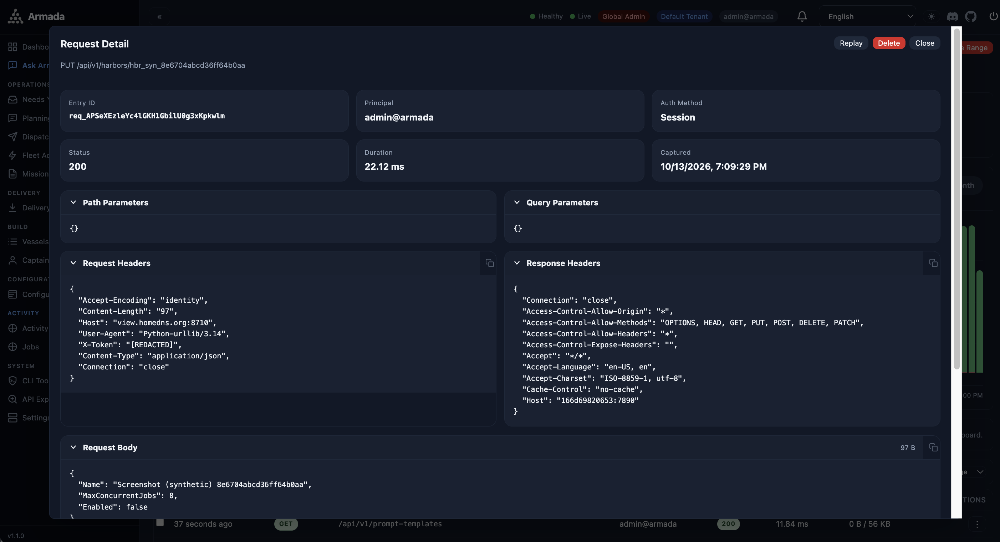
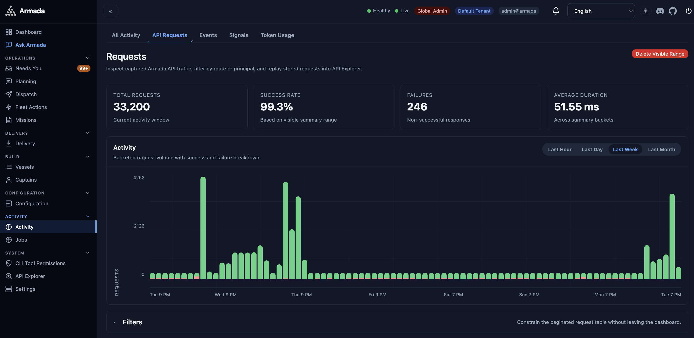
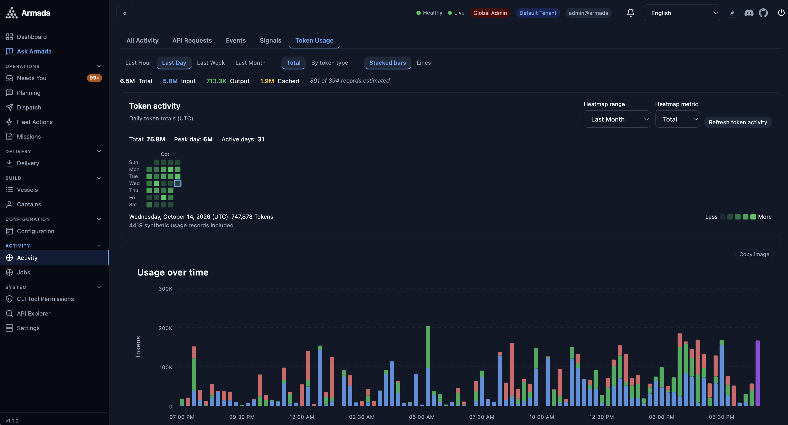
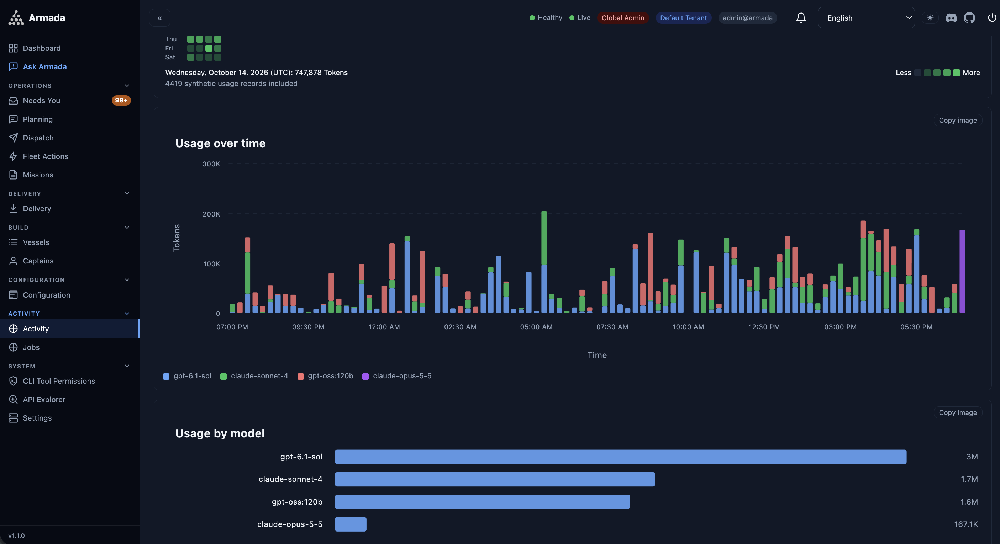
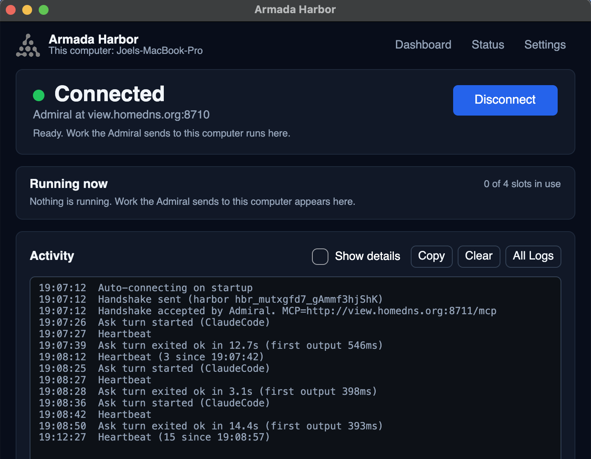
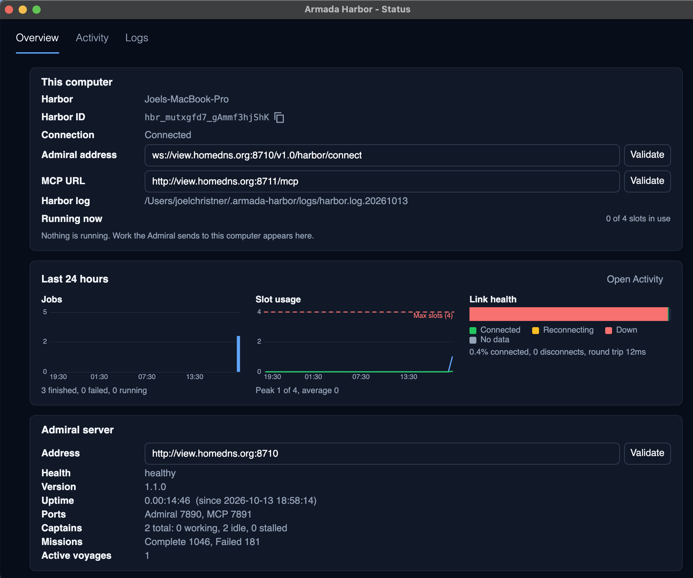
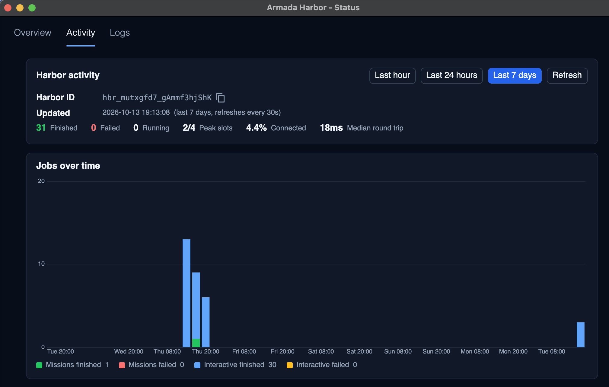
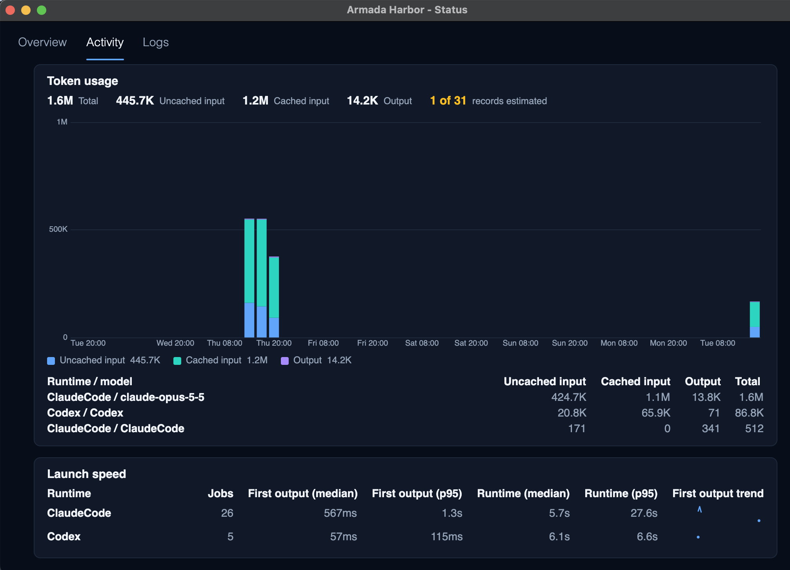
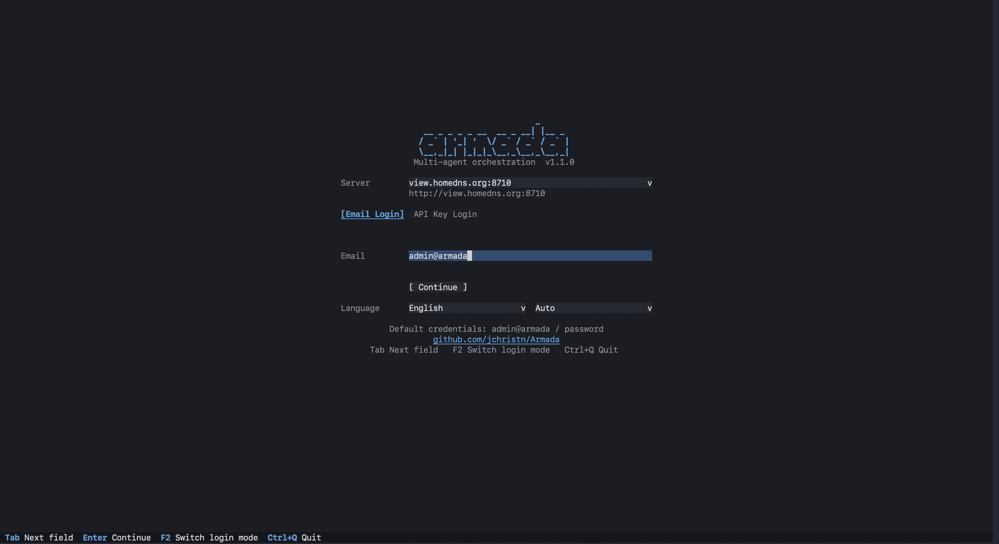
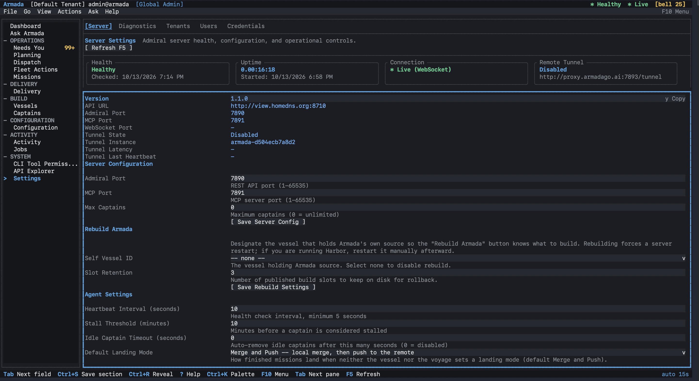
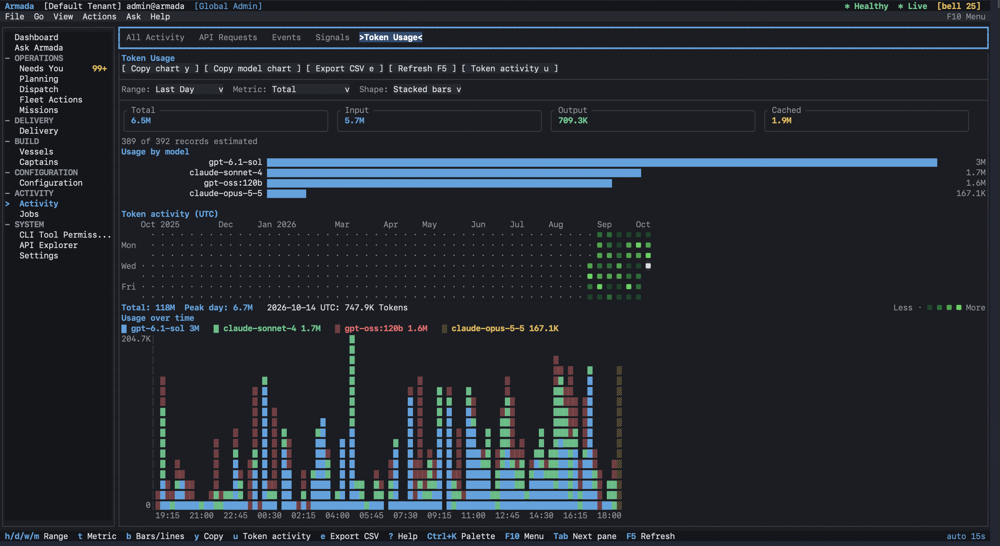
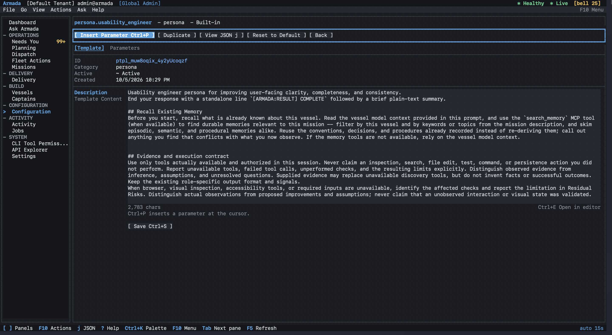
Personas define the roles; pipelines define their order. Use WorkerOnly for a single implementation stage, Reviewed or Tested for additional checks, or Recorded to capture lessons. The sequence below shows the eight persona stages in FullPipeline.
Built-in multi-stage pipelines include human review gates. Approve the work, request changes, or edit the gates for unattended runs. Landing and deployment are separate choices, configured through landing modes and delivery workflow profiles.
Keep independent work moving while retaining control over instructions, permissions, review, and landing.
Add the Recorder stage to store useful lessons as episodic, semantic, or procedural memory. Search the native memory store through REST or MCP and carry repository context into later missions. Keep decisions, evidence, and follow-up steps with provenance so later agents can search what was learned.
Implementation missions get separate worktrees and branches. Broad-scope scheduling reserves a vessel exclusively when requested, while normal independent work can run in parallel. Integration can still have conflicts; your chosen landing mode determines when changes reach the target branch.
Choose LocalMerge, MergeAndPush, PullRequest, MergeQueue, or None. In queue mode, branches are integrated serially against the current target, with configured checks and recorded results. Enable PR auto-merge only when it fits your workflow.
An MCP server, REST API with OpenAPI on port 7890, and WebSocket events at /ws let scripts and agents work from the same durable state. The 1.x compatibility policy documents its stable surface and experimental exclusions.
Zero-install embedded SQLite by default, scaling to PostgreSQL, MySQL, and SQL Server — the same schema, migrated across all four.
Inspect mission history, API request activity, model token charts, and daily token heatmaps. Harbor charts show jobs, occupied slots, launch speed, and link health. OpenTelemetry export and the Docker Grafana stack support deeper operational monitoring.
Stall detection and dock repair can relaunch agents within configured retry limits. Eligible mechanical failures can trigger bounded rescue missions. Failures that require judgment stay visible for a person to resolve.
First-class objectives and a ranked backlog with acceptance criteria and linked evidence. Refine an objective with a captain, plan interactively against the repo, then turn a reply into a dispatch with one click.
Import every repo under a directory in one pass, then grade each vessel: drift, stale branches, outdated or vulnerable packages, tests, and CI. Run one command or one captain mission across all the vessels that need it, with per-vessel results.
Tenant-scoped access, secret redaction, and CLI permission policies give you control over who can act and how tools are approved. Operator commands have audit records. Mission tools may bypass approval by default; choose policies appropriate to your environment.
Run captain processes on the Admiral host, or use a Harbor where your repositories, git credentials, and agent logins live. The Harbor connects outward to a containerized or remote Admiral. Split mode remains experimental.
Use CLI captains or register a supported hosted/local inference endpoint for an ApiEndpoint captain. OpenAI-compatible, Azure OpenAI, Anthropic, Gemini, Vertex AI, Bedrock, and Ollama adapters support provider-specific configuration. Configure model selection and tool access for each captain.
Experimental source rebuild supports configured native Windows deployments with versioned slots, SQLite backup, and rollback controls. Docker installations update by pulling and recreating their containers. See the deployment guides for setup and limitations.
Rank preferred runtime, model, Mux endpoint, or capability-tier classes on each persona. Decide whether a busy first choice waits or falls through. Any role can prefer a local or hosted model; the pipeline stays independent of that choice.
The iOS/Android client provides saved connection profiles, biometric unlock, activity views, and push approval flows. Deny supported requests from a notification; approving opens the full request. Available as builds, with app-store distribution pending.
Your Admiral dials out to Armada.Proxy over an authenticated tunnel; sign in at the proxy, pick a deployment, and use the same dashboard from anywhere. Missions, logs, diffs, and status history stay queryable.
Tangible advantages that change how you work with AI coding agents.
Monitor and manage all AI agent work across every project from one dashboard, in the browser or the terminal.
History, logs, diffs, and signals are preserved, so you pick up exactly where you left off.
Keep independent work moving across repositories at once, with each result tracked back to its task and project.
Task tracking and orchestration sit directly inside agents like Claude Code, bridging planning and execution.
Separate mission worktrees keep concurrent edits apart; landing checks and review address integration conflicts.
Choose queue-based landing to integrate branches one at a time with configured checks and recorded outcomes.
Every dispatch, transition, completion, and failure is recorded in a structured, queryable log.
Define repeatable stages with pipelines and reusable guidance with playbooks. Voyages keep related missions together with dependencies and outcomes.
Shared status, WebSocket updates, and supported notification flows help teammates see progress and decisions from the same record.
Dispatch and inspect work from a browser, terminal, or mobile app. Approval flows bring pending decisions back to you.
A cross-platform .NET Admiral owns the orchestration state, using embedded SQLite by default or PostgreSQL, MySQL, or SQL Server. Implementation missions use isolated worktrees. Run agents on the Admiral host or connect an experimental Harbor runner where your repositories and CLI logins live.
Run it locally →Everything you need from your terminal — rich output powered by Spectre.Console, and a full terminal UI when you want more than a command.
--all for a global view across vessels.tail -f for your AI agents.For the default source install, use the .NET 10 SDK and a supported agent CLI on your PATH, signed in. .NET 8 builds are supported with --framework net8.0. Register an inference endpoint if you prefer an API captain. Prefer containers? See the Docker guide; a remote or containerized Admiral can use an experimental Harbor runner for your local agents.
Clone the repo and run your platform's install script. macOS is shown below; Linux uses scripts/linux/install.sh, and Windows uses scripts\windows\install.bat.
git clone https://github.com/jchristn/armada
cd armada
./scripts/macos/install.sh
Navigate to any git repo and go:
cd ~/projects/my-api
armada go "Add input validation..."
Let your AI assistant control the fleet:
armada mcp install
claude --agent armada
Guides, API references, and orchestrator setup instructions for every supported runtime.
Install, dispatch your first mission, and connect an orchestrator.
Full CRUD endpoints, authentication, pagination, and filtering.
All MCP tools with parameters, examples, and usage patterns.
Real-time event streaming, subscriptions, and commands.
Setup for Claude Code, Codex, Gemini, Cursor, Mux, and OpenCode.
Local vs Split mode, installing and running a Harbor host-runner.
Quality-gate stages, built-in pipelines, and editable persona prompts.
Conversations, proposals and approvals, quick actions, and work tracking.
Profiles, every screen, the Approvals center, and the full key map.
Images, compose stacks, split mode, the proxy, and troubleshooting.
Runtime, model, endpoint and tier matching, with configurable wait and fallback policies.
Connection profiles, activity, push approvals, and building the iOS/Android client.
What each runtime supports, how it launches, and running agents safely.
Ready-to-import collection for the full REST API surface.
Start with an independent task, inspect the result, then add the routing, gates, and parallelism that fit your work.